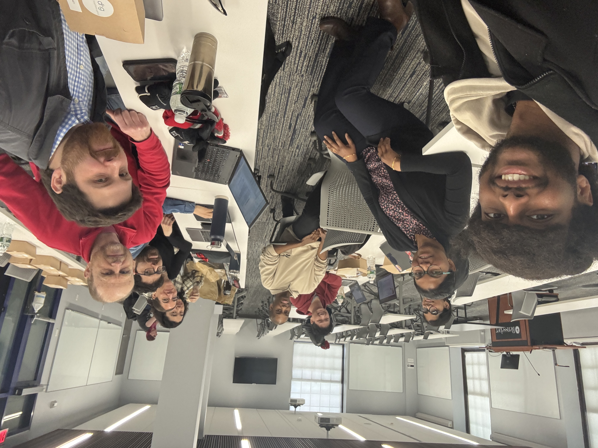

Welcome to the AI/ML Reading Group Webpage at RPI!
Our goal is to read and discuss diverse research papers in the interdisciplinary areas of AI/ML/NLP, IS, and HCI. Whether you're a novice or a seasoned researcher, all RPI members are welcome to join and contribute to our discussions. Interested? Join us to engage in stimulating discussions. We meet bi-weekly on Wednesdays! Contact manikl@rpi.edu for more questions!
If you are not at RPI but would like to recommend any research papers for us to read, please email manikl@rpi.edu
Our group during AY24-25

Spring 2025
| Paper Title | Paper Link |
|---|---|
| Jailbroken: How Does LLM Safety Training Fail? | Link |
| When Teams Embrace AI: Human Collaboration Strategies in Generative Prompting in a Creative Design Task | Link |
| Generative AI in Medical Practice: In-Depth Exploration of Privacy and Security Challenges | Link |
| Peer Review in the Age of Generative AI | Link |
| Can LLMs Learn from Previous Mistakes? Investigating LLMs’ Errors to Boost for Reasoning | Link |
| Retrieval-Augmented Generation for Natural Language Processing: A Survey | Link |
Fall 2024
| Paper Title | Paper Link |
|---|---|
| Constructing Dreams Using Generative AI | Link |
| Deepfakes, Phrenology, Surveillance, and More! A Taxonomy of AI Privacy Risks | Link |
| Generative Echo Chamber? Effect of LLM-Powered Search Systems on Diverse Information Seeking | Link |
| The Metacognitive Demands and Opportunities of Generative AI | Link |
| Every Answer Matters: Evaluating Commonsense with Probabilistic Measures | Link |
| How Johnny Can Persuade LLMs to Jailbreak Them: Rethinking Persuasion to Challenge AI Safety by Humanizing LLMs | Link |
| How Language Model Hallucinations Can Snowball | Link |
| Faith and Fate: Limits of Transformers on Compositionality | Link |
| QUANTIFYING LANGUAGE MODELS’ SENSITIVITY TO SPURIOUS FEATURES IN PROMPT DESIGN or: How I learned to start worrying about prompt formatting | Link |
| GSM-Symbolic: Understanding the Limitations of Mathematical Reasoning in Large Language Models | Link |
| GPT-4 Can't Reason | Link |
| Jailbreaking Large Language Models with Symbolic Mathematics | Link |